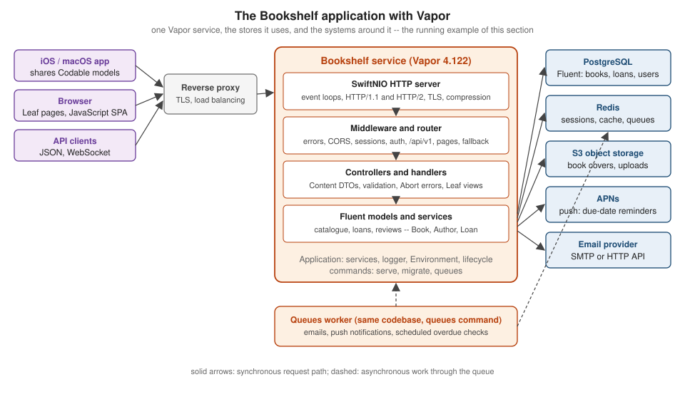

Swift Vapor
|
This content was generated with the assistance of AI and should be verified against the official documentation before being relied on in production. |
This section is written against Vapor 4.122.2 (the latest 4.x release, published 2026-09-17) on Swift 6: the local
toolchain is Swift 6.4 and the latest swift.org release is 6.4.1, and every example compiles in the Swift 6 language
mode. Vapor 5 exists only as a beta (5.0.0-beta.4, 2026-10-13) and is not generally available, so what is already
visible in it is marked as upcoming and never as current behaviour. Versions were checked on 2026-10-17.
What Vapor is
Vapor is an asynchronous, Swift-native web framework built on SwiftNIO. It routes HTTP requests to async handlers,
decodes and encodes typed Content, and ships companion packages for the database layer (Fluent and SQLKit), HTML
templates (Leaf), Redis, background jobs (Queues), JWT and push notifications (APNs). One language and one package
manager (SwiftPM) cover the server, the shared models and the Apple clients, and the same binary runs on macOS and Linux.
The section is for developers who know some Swift and want to build production web services, JSON APIs and server-rendered sites. The language itself is covered in the Swift Reference and these pages link there instead of repeating it. If the server is the back end of an iPhone, iPad or Mac app, the Apple Platforms section covers the client side (SwiftUI, networking, notifications), and Full-Stack Swift with iOS Clients joins the two with a shared package.
What’s covered
Foundations
-
Introduction & Architecture — what Vapor is, SwiftNIO, the request lifecycle, the package map and when to choose server-side Swift.
-
Installation & Toolchain — Xcode, Swiftly and Docker images for Swift 6, and the Vapor Toolbox.
-
Getting Started —
vapor new, running the template on localhost:8080 and the first routes and tests. -
Project Structure & SwiftPM — template folders,
Package.swift, targets and layering controllers, services and repositories. -
Application Lifecycle & Entrypoint — the
@mainentrypoint,configure, boot, serve and shutdown, and lifecycle handlers. -
Swift Concurrency in Vapor — event loops, the cooperative pool, Swift 6 strict concurrency and
Sendableservices.
Routing and HTTP
-
Routing — methods, path parameters, wildcards, groups and body collection or streaming.
-
Controllers & Route Collections — organising routes with
RouteCollectionand a complete CRUD controller. -
Requests & Responses — an HTTP refresher plus the
RequestandResponsetypes, bodies and streaming. -
Content & Codable — the
Contentprotocol, JSON, forms and multipart bodies, query decoding and coders. -
Validation — the
Validatableprotocol, validators and the 400 error shape. -
Error Handling —
Abort,AbortError, the error middleware and custom error responses. -
Middleware — the responder chain, ordering, writing your own middleware and the built-ins.
-
Static Files & File I/O —
FileMiddleware, caching headers, ranges and non-blocking file access. -
File Uploads & Streaming — multipart uploads, streamed bodies, validation, S3 storage and safe names.
-
HTTP Client — calling other services with
req.client, timeouts and testable clients. -
Configuration & Environment — twelve-factor configuration, environments, typed settings and secrets.
-
Services, Storage & Dependency Injection — dependency injection without a container using
ApplicationandRequestextensions. -
Server Configuration — the HTTP server settings: binding, HTTP/2, TLS, compression and limits.
Data
-
Fluent Overview & Drivers — the Fluent stack and configuring PostgreSQL, MySQL, SQLite and MongoDB.
-
Fluent Models — the
Modelprotocol, property wrappers, enums, groups and timestamps. -
Fluent Relations — parents, children, siblings with pivots and eager loading.
-
Migrations & Schema — evolving the schema with
AsyncMigrationand themigratecommand. -
Fluent Queries & Pagination — filters, sorting, aggregates, offset and keyset pagination.
-
Transactions, Model Middleware & Soft Delete — transactions, model lifecycle hooks and soft deletion.
-
SQLKit & Raw SQL — dropping below Fluent with safe raw SQL and the SQLKit builders.
-
MongoDB — Fluent with MongoDB through fluent-mongo-driver and MongoKitten.
-
Redis & Caching — the cache API, Redis, cache-aside and invalidation.
Views, web apps and real-time
-
Leaf Templates — server-rendered HTML with Leaf: syntax, layouts, escaping and view rendering.
-
Leaf Custom Tags & HTML DSLs — custom Leaf tags and type-safe HTML in Swift.
-
Server-Rendered Web Apps & Forms — a complete CRUD web UI with forms, validation errors and redirects.
-
Sessions & Cookies — session middleware, cookie settings and the memory, Fluent and Redis drivers.
-
WebSockets — the upgrade handshake, the
WebSocketAPI and broadcasting to clients. -
Server-Sent Events — one-way push with
text/event-streamand streaming responses.
Security
-
Authentication —
req.auth, authenticators for Basic, bearer and credentials, and an authentication chooser. -
Fluent Authentication & Tokens — password and token authentication backed by Fluent models.
-
Session Authentication & Web Login — cookie sessions, login and logout flows for server-rendered applications.
-
JSON Web Tokens (JWT) — signing, verifying and rotating keys with the jwt package, and access and refresh tokens.
-
Authorization — roles, ownership checks and policies, and 401 against 403 against 404.
-
OAuth & Sign in with Apple — verifying Apple, Google and Microsoft identity tokens and social login.
-
Passwords & Crypto — bcrypt hashing, password policies and swift-crypto.
-
Security Hardening — CSRF, security headers, rate limiting, CORS and a pre-release checklist.
APIs, integration and background work
-
API Design, Versioning & DTOs — resource modelling, status codes, patching, DTOs and versioning.
-
OpenAPI with swift-openapi-generator — spec-first APIs with generated server stubs and clients.
-
Queues & Background Jobs — jobs with the queues package, retries and workers.
-
Scheduled Jobs — recurring and one-off jobs with the queues scheduler.
-
APNs Push Notifications — sending Apple push notifications with token-based authentication.
-
Sending Email — transactional email through SendGrid, Mailgun or SMTP adapters.
-
Commands — custom console commands with ConsoleKit.
-
Full-Stack Swift with iOS Clients — a shared DTO package used by the Vapor server and SwiftUI clients.
Operations
-
Testing — VaporTesting and Swift Testing, test databases and fakes.
-
Logging — swift-log, log levels, request ids and log handlers.
-
Tracing, Metrics & OpenTelemetry — swift-distributed-tracing, swift-metrics and exporting to OpenTelemetry and Prometheus.
-
Deployment with Docker — the multi-stage Dockerfile, caching, static builds and Compose.
-
Deployment Targets — running on Linux hosts, containers, Kubernetes and cloud platforms.
-
Production & Performance — release builds, health checks, graceful shutdown, scaling and tuning.
-
Microservices & an API Gateway — splitting a service, service-to-service authentication and a gateway.
Reference and evolution
-
What’s New, Upgrading & Vapor 5 — how Vapor changed from version 2 to 4 and what the Vapor 5 beta brings.
-
Ecosystem & Framework Comparison — the package landscape and how Vapor compares with Hummingbird and others.
-
Cheat Sheet — a one-page quick reference with a downloadable PDF.
Reading path
-
Introduction & Architecture, Installation & Toolchain and Getting Started — the stack and a first service
-
Project Structure & SwiftPM and Swift Concurrency in Vapor — how the code is laid out and why blocking matters
-
Routing, Requests & Responses and Content & Codable — the request side
-
Validation, Error Handling and Middleware — the rest of the request pipeline
-
Fluent Overview & Drivers, Fluent Models, Fluent Relations and Migrations & Schema — a first real database
-
Authentication and JSON Web Tokens (JWT) — who is calling
-
Then the web UI, API, background work and operations groups below in any order; finish with Testing and Deployment with Docker.
Coming from Vapor 2 or 3, from an older book, or from another framework? Start with What’s New, Upgrading & Vapor 5 and Ecosystem & Framework Comparison.
Running example

Every page builds part of Bookshelf, an original library application: a catalogue of books and authors, loans with due
dates, reviews, user accounts, a server-rendered web UI, live updates over WebSockets and Server-Sent Events, and the
operational pieces of a real service. The Fluent models are Author, Book, Review, User, Tag, BookTag and
Loan. The code is split into two packages. BookshelfShared holds the Codable, Sendable DTOs that the server
and the clients both import, with no Vapor dependency. BookshelfServer is the Vapor package: its executable target
App has entrypoint.swift, configure.swift, routes.swift and the Controllers/, Models/, Migrations/,
DTOs/, Jobs/, Commands/, Middleware/ and Services/ folders under Sources/App/, with Resources/Views/,
Public/ and the Tests/AppTests/ test target beside them. The layout is explained in
Project Structure & SwiftPM, which also shows how to split the
server into a library and a thin executable, and
Full-Stack Swift with iOS Clients shows the iOS clients
importing BookshelfShared.
Related material on this site
| Topic | Where |
|---|---|
Swift language, concurrency, packages and testing |
|
SwiftUI, URLSession networking and the clients of a Vapor API |
Apple Platforms; in particular Networking |
Push notifications on the device (the server side is APNs Push Notifications) |
|
OAuth 2.0, OpenID Connect and JWT in depth |
|
CORS in the browser |
|
Container images and Compose |
|
Running services in a cluster |
|
SQL and PostgreSQL |
|
Redis data structures and operations |
|
MongoDB documents, queries and operations |
|
Prometheus, PromQL and alerting |
|
OpenTelemetry concepts and exporters |
There is no stand-alone OpenTelemetry section yet; Tracing, Metrics & OpenTelemetry covers it for Vapor, and OpenTelemetry in axum shows the same pipeline in Rust |
Other backend frameworks |
A comparison of backend and web frameworks across languages is planned (issue #263), and further API-design, security, resilience and observability topics are tracked in issues #196 and #236. End-to-end browser testing with Playwright, Cypress and Selenium is covered in the E2E Testing in the Browser section. Chat, videoconference and WebSockets are covered in the WebRTC & WebSockets section.
Bibliography
Books
-
Tim Condon, Tanner Nelson, Jonas Schwartz and Logan Wright, Server-Side Swift with Vapor: Building Web APIs and Web Apps, 3rd edition. Razeware (raywenderlich.com, now Kodeco), 2020. ISBN 978-1-950325-27-6. Publisher page; companion code. Consulted in its early-access build, in which chapters 1-13 target Vapor 4.0 and the rest still show Vapor 3; the final edition is on the publisher page.
-
Angus Yeung, Hands-On Server-Side Web Development with Swift: Build dynamic web apps by leveraging two popular Swift web frameworks: Vapor 3.0 and Kitura 2.5, 1st edition. Packt, 2018 (November). ISBN 978-1-78934-117-1 (print), 978-1-78934-586-5 (eBook). Publisher page; companion code.
-
Ankur Patel, Hands-On Full-Stack Development with Swift: Develop full-stack web and native mobile applications using Swift and Vapor, 1st edition. Packt, 2018 (March). ISBN 978-1-78862-524-1 (print), 978-1-78862-627-9 (eBook). Publisher page; companion code.
The books are consulted references, not the primary source. All three predate current Vapor 4 practice (async/await, Swift 6, VaporTesting); on any discrepancy, and wherever a book is silent on a later feature, the official documentation wins, and the pages say so in prose (collected on What’s New, Upgrading & Vapor 5).
Vapor documentation and resources
-
Vapor website and Vapor documentation, whose pages are linked individually from the pages that use them; the Vapor 5 documentation (beta)
-
Vapor API reference and Vapor blog, in particular The Future of Vapor and Upcoming Sendable changes
-
vapor/vapor (README and releases), vapor/template, vapor/toolbox and vapor/docs
-
Package repositories: fluent, fluent-kit, fluent-postgres-driver, fluent-mysql-driver, fluent-sqlite-driver, fluent-mongo-driver, sql-kit, postgres-nio, leaf, leaf-kit, redis, queues, queues-redis-driver, jwt, jwt-kit, apns, websocket-kit, multipart-kit, routing-kit and console-kit
-
Community: Vapor Discord and vapor-community
Swift and Swift on Server documentation
-
The Swift Programming Language, through the Swift Reference; Swift Package Manager, Swift Testing, Swiftly and Swift releases
-
SwiftNIO (documentation), swift-log, swift-metrics, swift-distributed-tracing, swift-service-lifecycle, swift-configuration, swift-crypto, AsyncHTTPClient and swift-otel
-
APNSwift, Apple: Sending notification requests to APNs and Sign in with Apple REST API
-
Soto, Hummingbird and MongoKitten
Community packages and services
-
Authentication and security: Imperial, VaporSecurityHeaders and Gatekeeper (archived; history only)
-
Background jobs: the Fluent queues driver
-
Email: Mailgun and sendgrid-kit
-
HTML and front end: Elementary, Plot, swift-html, htmx and Bootstrap
-
Deployment: Docker, Fly.io, DigitalOcean Droplets, nginx, systemd, Supervisor and the vapor-community Heroku buildpack (legacy)
-
Databases: PostgreSQL, MySQL, SQLite, MongoDB and Redis
-
Observability: OpenTelemetry, Prometheus, Jaeger and Grafana
-
Historical comparison only: Kitura and Perfect (neither is archived on GitHub, but both are dormant)
Specifications and standards
-
HTTP: RFC 9110: HTTP Semantics, RFC 9111: HTTP Caching, RFC 9112: HTTP/1.1, RFC 9113: HTTP/2, RFC 6585: Additional HTTP Status Codes, RFC 7239: Forwarded, RFC 8288: Web Linking, RFC 8594: The Sunset Header and RFC 9745: The Deprecation Header
-
Content: RFC 3986: URI, RFC 6265: Cookies, RFC 6266: Content-Disposition, RFC 7578: multipart/form-data, RFC 7396: JSON Merge Patch, RFC 4180: CSV and RFC 9457: Problem Details for HTTP APIs
-
APIs and observability: OpenAPI Specification 3.1 and W3C Trace Context
-
Real time: RFC 6455: The WebSocket Protocol and WHATWG: Server-sent events
-
Security and identity: WHATWG Fetch: CORS, RFC 7519: JWT, RFC 7515: JWS, RFC 7517: JWK, RFC 7518: JWA, RFC 8725: JWT Best Current Practices, RFC 6749: OAuth 2.0, RFC 6750: Bearer Token Usage, RFC 7636: PKCE, RFC 8705: OAuth 2.0 Mutual-TLS, RFC 7617: HTTP Basic Authentication, RFC 4226: HOTP, RFC 6238: TOTP and RFC 8996: Deprecating TLS 1.0 and 1.1
-
Email: RFC 5321: SMTP, RFC 5322: Internet Message Format, RFC 7208: SPF, RFC 6376: DKIM and RFC 7489: DMARC
-
OWASP: the OWASP Top 10:2025, the OWASP API Security Top 10, the OWASP Secure Headers Project and these pages of the OWASP Cheat Sheet Series: Password Storage, Authentication, Forgot Password, Session Management, Authorization, Insecure Direct Object Reference Prevention, CSRF Prevention, XSS Prevention, HTTP Headers, File Upload, SSRF Prevention, JSON Web Token and Logging